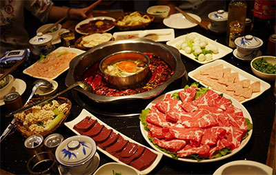

火锅健康

吃火锅需要注意一些事项
火锅虽味美，但也暗藏伤害，不得不防，因此，吃火锅要注意：
注意卫生
器具清洁新鲜为上普通的铜火锅在停用后，易生一层薄薄的绿色铜锈，这是铜与残留水或湿气、锅上沾留的调料醋酸、空气中的二氧化碳发生化学反应生成的碱式碳酸铜或醋酸铜，它们都有毒。因此清洗工作要做好，不然会造成铜锈中毒，出现恶心、呕吐等症状。同时，火锅以涮烫为主，所选菜料必须新鲜、干净，注意卫生，严防食物中毒。
火力要猛
火力要猛火候适宜火锅底火一定要旺，以保持锅内汤汁滚沸为佳。菜料食物在锅里煮的时间过长，营养成分会被破坏，容易失去鲜味；若不等烧开、烫熟即吃，病菌和寄生虫卵未被彻底杀死，又易引起消化道疾病。
不宜滚烫
食用不宜滚烫口腔、食道和胃粘膜一般只能耐受50℃—60℃的温度，太烫的食物，就会损伤粘膜，导致急性食道炎和急性胃炎。所以，从锅中取出滚烫的涮食时，最好先放在小碟晾凉。 食高脂猛辣有忧喝锅内涮汤有害火锅的涮汤，是以大量猪油、羊油、牛油等动物高脂物质为底料的，又多以辣椒、胡椒、花椒为作料，火锅吃多了，易致高血脂症等疾病。
忌吃的时间太久
有的人一吃就是数小时之久，甚至通宵达旦，这样会使胃液、胆汁、胰液等消化液不停地分泌，腺体得不到正常的休息，导致胃肠功能紊乱而发生腹痛、腹泻，严重的可患慢性胃肠炎、胰腺炎等疾病。
忌吃得太烫
太烫的食物容易烫伤口腔和食道黏膜，若遇烟酒或不清洁的食物更容易导致疾病。
喜食烫辣警惕口腔癌变
忌不掌握好火候：吃火锅时，若食物在火锅中煮久了会失去鲜味，破坏营养成分；若煮的时间不够，又容易引起消化不良。
少食内脏
随着农药、化肥、添加剂等在食品生产过程中的应用，动物的内脏往往成为这类有害物质的“过滤器”和“贮存器”，尤其是肝脏、肺脏，所含的病原微生物和药物残留量最高。
制作人：任子欣（计算机类1901班）总结链接